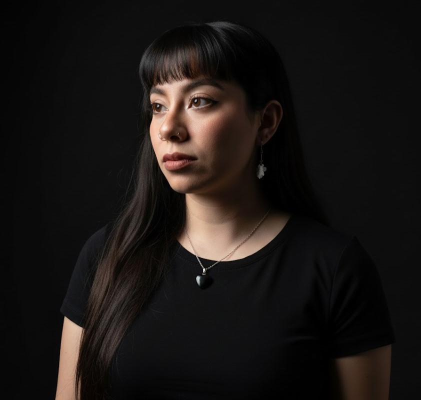
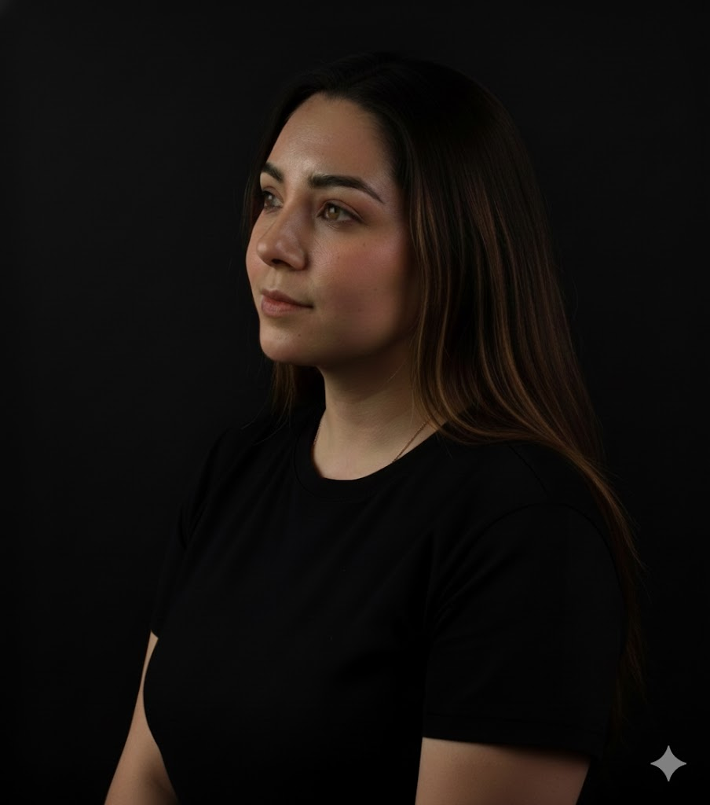

Raúl Adrián Bringas Jiménez [Desarrollador Backend]
Originario de la Ciudad de México, Raúl vivió allí hasta los 18 años antes de mudarse al norte para estudiar su licenciatura. Desde pequeño ha cultivado una pasión por las matemáticas, la lógica y la programación. Su objetivo es despegar su carrera con este proyecto y crecer profesionalmente en TI.
Carlos Sebastián Castilla Mendoza [Scrum Master]
Originario de la Ciudad de México, me apasiona la tecnología, la innovación y la resolución de problemas, siendo hábil en matemáticas. Espero que al finalizar este bootcamp pueda encontrar un trabajo que me permita viajar por el mundo mientras continúo aprendiendo y manteniéndome actualizado en TI.
José Eduardo Frías Domínguez [Desarrollador Backend]
Originario en Guadalajara, Jalisco, José estudió Ingeniería en Sistemas Automotrices motivado por su amor a los vehículos y la programación. Su meta principal es integrarse al sector automotriz para aplicar sus conocimientos técnicos, aportar valor real y lograr un crecimiento personal y profesional a corto y largo plazo.

Jessica Bacilia Pérez Romero [Documentador / Analista]
Originaria de Puebla, Jessica está inmersa en el aprendizaje tecnológico a través del bootcamp. Previo a esto, desarrolló su talento artístico como tatuadora profesional. En su tiempo libre, disfruta de una mezcla de pasiones que incluyen el dibujo, el aprendizaje de nuevos idiomas y el ciclismo.
Joe Bryan Torres Crucillo [Desarrollador Front-End]
Originario del Estado de México, Joe tiene una formación académica enfocada en el área económico-administrativa. Sin embargo, es un entusiasta multifacético con una fuerte pasión por los deportes, la música y, especialmente, la tecnología, buscando desarrollarse activamente dentro de este sector.
Karen Janet Ricárdez Santos [Desarrolladora Frontend]
Originaria de Tabasco, Karen se trasladó a la Ciudad de México a los 18 años para realizar sus estudios de licenciatura. Con un fuerte interés en las Ciencias de la Tierra y la programación, busca desarrollar soluciones innovadoras para retos actuales y profundizar sus conocimientos en Tecnologías de la Información.

Zoila Yerania González Hernández [Product-Owner]
Originaria de Autlán, Jalisco, y formada en Finanzas en Colima, Zoila es una persona creativa y lógica. Su perfil combina disciplina y pensamiento crítico con intereses variados como la lectura, el área médica y la tecnología. Disfruta aprender y explorar nuevas ideas que despierten su curiosidad en los negocios.